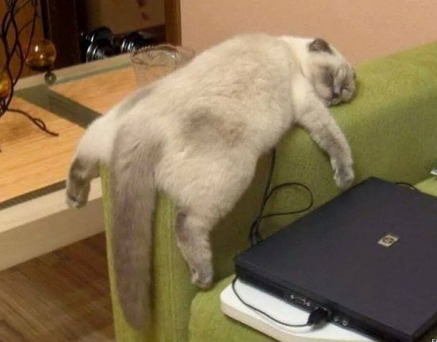

Nos hemos vuelto criatuas consentidas y caprichosas. Nuestras destrezas para la caza y el sigilo siguen intactas, pero nos hemos vuelto perezosos.

Los humanos no pueden quitar sus estúpidos teléfonos de nuestras caras. Siempre nos volvemos un meme (en especial, los naranjosos).
Aunque, realmente, hay cosas que nunca cambian: hay gente que nos adora como los egipcios, nos demoniza como los monjes medievales, y nos utiliza como símbolo de prestigio como los ilustrados. Afortunadamente, mi dueña es egipcia <3
volver a inicio Continuar el recorrido